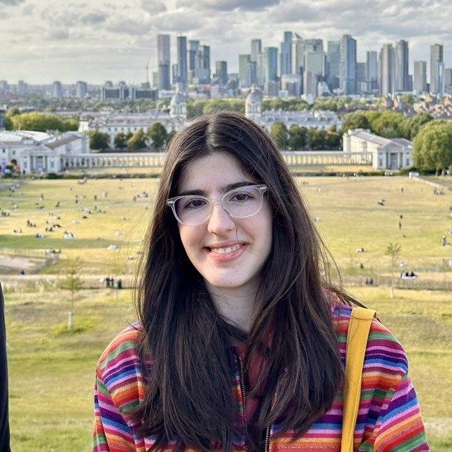

Sara Dragutinovic
I'm a machine learning PhD student at the NYU Center for Data Science, advised by Prof. Rajesh Ranganath. I study how the choices we make in training (the optimizer, the architecture, the structure of the data) shape what neural networks end up learning.
I studied Mathematics and Computer Science at the University of Oxford. I did my Master's thesis at the Gatsby Computational Neuroscience Unit with Aaditya Singh and Prof. Andrew Saxe, on how transformers learn in context.
I'm originally from Serbia. Outside research, I love Latin dancing, I take photos, and I enjoy concerts and theatre.
Email · GitHub · LinkedIn · Twitter/X · Google Scholar
News
- July 2026 – New preprint: To Use or not to Use Muon: How Simplicity Bias in Optimizers Matters, with Yedi Zhang and Rajesh Ranganath
- Aug 2025 – Launched my new personal website 🎉
- July 2025 – My Master's thesis Transformers may learn to classify in-context by kernel gradient descent won the Gibbs prize for the best computer science project.
- July 2025 – Scored First Class in my Oxford finals, ranked the second best in the cohort.